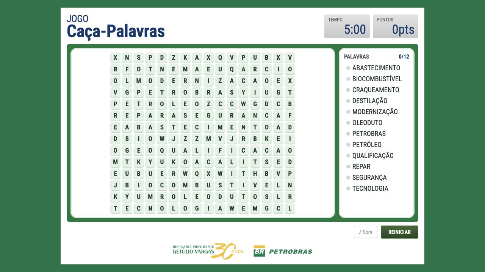
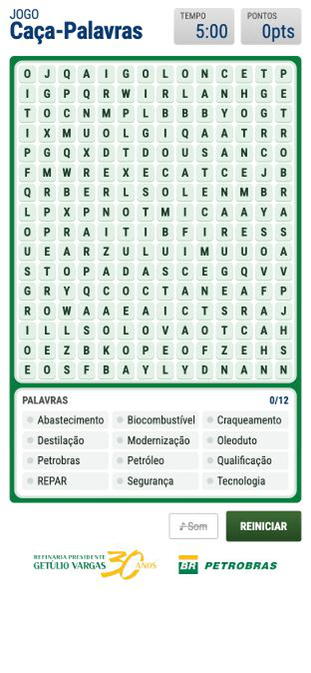

Words to find
Refinery-related terms connect the challenge to the world of REPAR.
Petrobras · Games & learning
REPAR Word Search turns the vocabulary of refining into a five-minute discovery game. A project from 2007, rebuilt for desktop and mobile.

Originally created for REPAR’s 30th anniversary in 2007, the word search introduces terms connected to the refinery and its processes.
The web version brings the game to today’s browsers, keeping the focus on a simple challenge: finding the hidden words before time runs out.
The game experience
Refinery-related terms connect the challenge to the world of REPAR.
A time limit gives each game a clear goal and a sense of pace.
Words can appear across the grid in eight directions.
Interaction design
Drag across the letters or tap the two ends of a word. The same challenge adapts to different ways of playing.
The grid changes with each new game, inviting another attempt.
Records and sound preferences are saved in the browser.

Try the experience
Open the game on your computer or phone and explore the vocabulary of the refinery.